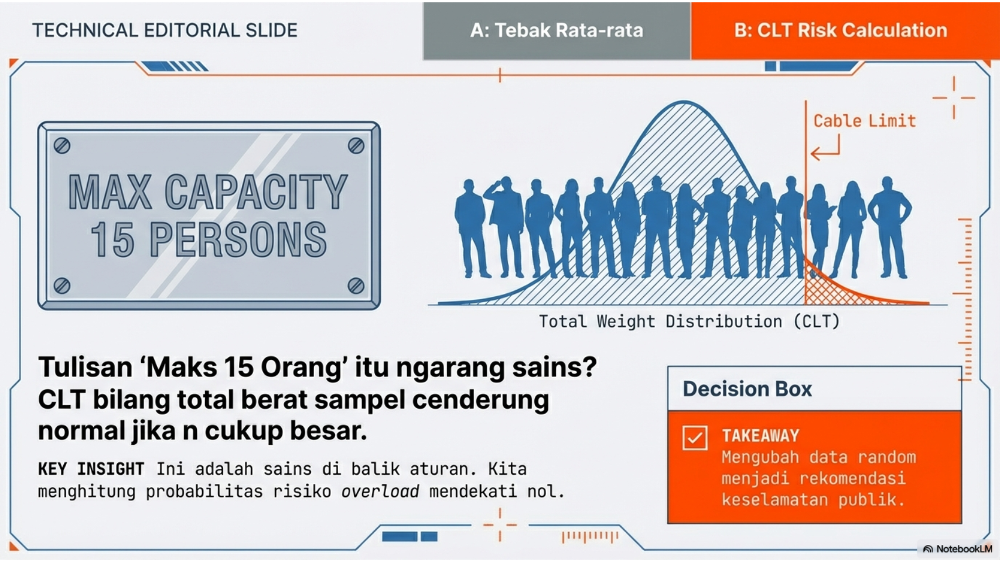

Sampling Distribution, Central Limit Theorem (CLT)

“Tulisan ‘maks 15 orang’ itu ngarang atau sains? Kalau berat orang random, total berat 20 orang juga random. CLT bilang: total/rata-rata sampel cenderung normal kalau n cukup besar. Jadi kita bisa hitung peluang overload. Hari ini kamu belajar ‘sains di balik aturan’: bukan sekadar angka, tapi probabilitas risiko. Output akhirnya: rekomendasi batas penumpang yang membuat risiko overload mendekati nol.”
Week 10: Distribusi Sampling dan Teorema Limit Pusat
11.1 Agenda Perkuliahan Minggu 10
Topik: Distribusi Sampling & Teorema Limit Pusat (CLT) Tema Misi: “Order from Chaos: The Ultimate Statistical Cheat Code”
11.1.1 Pertemuan 1: Senin (1 Jam) - The Magic Trick
Fokus: Membangun intuisi visual bahwa rata-rata sampel selalu membentuk lonceng (Normal), tidak peduli seberapa aneh data aslinya.
00:00 - 00:10 | The Hook: “Misteri Lift & Sumo”
Masalah: Lift tertulis “Max 15 Orang / 1000kg”. Rata-rata berat manusia 65kg. \(15 \times 65 = 975\)kg. Aman?
Provokasi: “Bagaimana jika 15 orang itu adalah tim Sumo? Atau anak TK? Seberapa sering lift overload?”
Poin: Kita tidak bisa memprediksi berat 1 orang (acak), tapi kita bisa memprediksi total berat 15 orang dengan sangat presisi.
00:10 - 00:30 | Live Simulation: “From Chaos to Order”
Dosen (Python Demo):
Tampilkan distribusi populasi yang “jelek” (misal: Distribusi Uniform/Kotak, atau Eksponensial yang sangat miring).
Ambil 1 sampel \(\to\) Plot (Masih acak).
Ambil rata-rata dari 5 sampel \(\to\) Plot (Mulai berkumpul di tengah).
Ambil rata-rata dari 30 sampel \(\to\) Plot (BUM! Muncul Kurva Lonceng Sempurna).
Konsep: Inilah Teorema Limit Pusat (CLT). “Cheat Code” statistik yang mengizinkan kita menggunakan rumus Normal untuk hampir semua masalah jika \(n \ge 30\).
00:30 - 00:50 | Konsep: Standard Error (SE)
Jelaskan bedanya \(\sigma\) (sebaran individu) vs \(\sigma/\sqrt{n}\) (sebaran rata-rata).
Semakin banyak data (\(n\) naik), kurva semakin kurus (error makin kecil).
00:50 - 01:00 | Pod Formation & Mission Brief
Misi GitHub: “The Safety Engineer”. Mahasiswa harus menentukan batas aman kapasitas server/lift menggunakan simulasi CLT.
11.1.2 Pertemuan 2: Rabu (2 Jam) - Simulation Lab
Fokus: Menggunakan Python untuk membuktikan CLT dan menghitung risiko sistem.
00:00 - 00:20 | Micro-Lecture: Law of Large Numbers vs. CLT
LLN: Rata-rata mendekati target (Akurasi).
CLT: Rata-rata membentuk pola lonceng (Presisi/Distribusi).
00:20 - 01:10 | Pod Challenge: “Capacity Planning Simulator”
Skenario: Anda mendesain microservice. Waktu proses per request berdistribusi Eksponensial (sangat miring, banyak request cepat, sedikit yang lambat sekali).
Tugas (Python):
Generate populasi latency eksponensial (10.000 data).
Ambil sampel n=5, n=30, n=100. Plot histogram rata-ratanya.
Buktikan bahwa pada n=30, distribusinya sudah Normal.
Hitung peluang rata-rata latency \(> 200\)ms. Bandingkan hasil hitungan rumus CLT vs hasil Simulasi.
01:10 - 01:40 | Deep Dive: Bootstrap (Modern Sampling)
Masalah: “Bagaimana jika kita cuma punya 1 sampel kecil dan tidak tahu populasinya?”
Teknik: Resampling (Bootstrap). Teknik komputasi modern untuk membuat confidence interval tanpa rumus rumit.
01:40 - 01:50 | Showcase & Debat
“Apakah CLT berlaku jika datanya punya outlier ekstrim?” (Diskusi tentang keterbatasan CLT di dunia nyata).
01:50 - 02:00 | Exit Ticket
Pertanyaan: “Jika kamu ingin memperkecil error estimasi menjadi setengahnya, berapa kali lipat kamu harus memperbanyak sampel?” (Jawab: 4 kali lipat, karena akar kuadrat).
11.2 Materi Kuliah: Konsep, Aplikasi, & Komputasi
11.2.1 1. Konsep Dasar
Distribusi Sampling: Distribusi probabilitas dari suatu statistik (misal: rata-rata \(\bar{X}\)) yang diperoleh dari banyak sampel.
Teorema Limit Pusat (CLT): Menyatakan bahwa jika ukuran sampel (\(n\)) cukup besar (\(n \ge 30\)), distribusi rata-rata sampel akan mendekati Distribusi Normal, terlepas dari bentuk distribusi populasi aslinya.
Mean sampling = \(\mu\) (Mean Populasi).
Standar Deviasi sampling (Standard Error) = \(\sigma/\sqrt{n}\).
Standard Error (SE): Mengukur seberapa akurat rata-rata sampel merepresentasikan rata-rata populasi.
11.2.2 2. Aplikasi Sistem Informasi
Capacity Planning: Menentukan batas aman. Misal, jika berat rata-rata paket data adalah 1KB (variansi tinggi), berapa peluang total 1000 paket melebihi bandwidth 1.2MB? CLT memungkinkan kita menghitung ini menggunakan Z-score.
Quality Control (Batch Testing): Menguji sekumpulan chip. Jika kita mengambil sampel 50 chip, kita bisa memprediksi kualitas rata-rata batch tersebut dengan presisi tinggi.
A/B Testing: Membandingkan rata-rata dua kelompok user. Asumsi Normalitas pada uji-t didasarkan pada CLT karena jumlah user biasanya banyak.
11.2.3 3. Komputasi (Python)
Sampling:numpy.random.choice(population, size=n) untuk mengambil sampel.
Visualisasi: Gunakan plt.hist(sample_means, bins=30) untuk melihat bentuk lonceng.
11.3 Tugas Kelompok (GitHub Classroom)
Judul: Week 10 Mission: The Chaos Tamer - Validating CLT
Deskripsi: Mahasiswa diberikan dataset “durasi main game” yang distribusinya sangat miring (banyak pemain sebentar, sedikit pemain hardcore). Tugas mereka adalah membuktikan bahwa rata-rata durasi bermain harian tetap mengikuti pola Normal.
Set Soal (Notebook): 1. Populasi Aneh (20 poin): Buat distribusi populasi Gamma atau LogNormal. Tampilkan histogramnya (harus tidak simetris). 2. Efek Ukuran Sampel (30 poin): - Lakukan sampling berulang (1000 kali) dengan n=5, n=30, dan n=100. - Plot distribusi rata-rata sampel untuk ketiga skenario tersebut secara overlay. - Jelaskan perubahannya di Markdown (Bentuk & Lebar kurva). 3. Standard Error Check (20 poin): - Hitung standar deviasi dari array sample_means (Empiris). - Hitung \(\sigma/\sqrt{n}\) teoritis. Bandingkan apakah hasilnya dekat. 4. Real-world Prediction (30 poin): - Jika batas kuota server adalah rata-rata 55 menit/user. Hitung peluang sampel 50 user melampaui batas ini menggunakan pendekatan Normal (CLT).
11.4 15 Soal & Solusi
11.4.1 A. Pertanyaan Konseptual
Soal: Apa perbedaan mendasar antara parameter populasi dan statistik sampel?
Solusi: Parameter populasi adalah nilai numerik konstan yang mendeskripsikan karakteristik seluruh populasi (misal: \(\mu\) atau \(\sigma\)), biasanya nilainya tidak diketahui. Statistik sampel adalah nilai variabel yang dihitung dari sekumpulan data sampel (misal: \(\bar{x}\) atau \(s\)) yang digunakan untuk mengestimasi parameter populasi.
Soal: Mengapa distribusi sampling dari rata-rata sampel cenderung menjadi Normal meskipun populasi aslinya tidak Normal?
Solusi: Ini adalah inti dari Teorema Limit Pusat (CLT). Penjumlahan (atau rata-rata) dari banyak variabel acak independen menyebabkan efek-efek ekstrim dari masing-masing data saling meniadakan, sehingga hasil agregatnya memusat di sekitar mean dan membentuk pola lonceng simetris (Normal).
Soal: Jelaskan makna dari Galat Baku (Standard Error) dan bagaimana hubungannya dengan ukuran sampel.
Solusi: Standard Error (SE) adalah standar deviasi dari distribusi sampling rata-rata (\(\sigma_{\bar{x}}\)). Ia mengukur seberapa jauh rata-rata sampel mungkin menyimpang dari rata-rata populasi sebenarnya. Hubungannya terbalik dengan akar ukuran sampel (SE=\(\sigma/\sqrt{n}\)); semakin besar sampel, semakin kecil error-nya.
Soal: Apa peran Teorema Limit Pusat dalam menjustifikasi penggunaan uji-z pada sampel besar?
Solusi: Uji-z memerlukan asumsi bahwa data berdistribusi Normal. CLT menjamin bahwa untuk sampel besar (\(n \ge 30\)), distribusi rata-rata sampel akan mendekati Normal terlepas dari distribusi asli datanya. Ini membenarkan penggunaan tabel Z untuk menghitung probabilitas pada sampel besar.
Soal: Bagaimana bias pemilihan sampel dapat merusak validitas distribusi sampling?
Solusi: Distribusi sampling dan CLT berasumsi bahwa sampel diambil secara acak (random sampling). Jika ada bias (misal: hanya mengambil sampel mahasiswa yang pintar), maka rata-rata sampel (\(\bar{x}\)) tidak akan memusat di sekitar rata-rata populasi (\(\mu\)), melainkan di sekitar nilai yang bias, membuat seluruh estimasi tidak valid.
11.4.2 B. Pertanyaan Aplikatif
Soal: Rata-rata waktu loading halaman web adalah 3 detik dengan standar deviasi 1 detik. Jika diambil sampel 100 kunjungan, berapa probabilitas rata-rata waktu loading sampel lebih dari 3,2 detik?
Soal: Sebuah perusahaan pengiriman mengklaim berat paket rata-rata 5kg. Jika seorang inspektur mengambil sampel 36 paket, tentukan rentang rata-rata sampel yang masuk akal menurut CLT.
Solusi: Menurut CLT, 95% rata-rata sampel akan berada dalam rentang \(\mu \pm 2 \times SE\). Asumsikan \(\sigma\) diketahui (atau diestimasi), misal \(\sigma=1\) kg.
SE=\(1/\sqrt{36}=1/6 \approx 0.167\).
Rentang wajar: \(5 \pm 2(0.167) = [4.67, 5.33]\) kg.
Soal: Analisis probabilitas proporsi pemilih dalam survei opini teknologi jika ukuran sampel adalah 400 orang dan proporsi populasi sebenarnya adalah 0,5.
Solusi: Distribusi proporsi sampel (\(\hat{p}\)) juga mengikuti CLT (mendekati Normal) dengan \(\mu_{\hat{p}}=p=0.5\) dan SE=\(\sqrt{p(1-p)/n}\).
Probabilitas hasil survei akan sangat dekat dengan 0.5 (dalam rentang \(0.5 \pm 0.05\) dengan keyakinan 95%).
Soal: Gunakan distribusi sampling untuk mengevaluasi akurasi sensor suhu yang rata-rata memiliki error nol tetapi variansi tertentu.
Solusi: Karena rata-rata error nol (\(\mu=0\)), sensor tidak bias. Akurasi ditingkatkan dengan mengambil rata-rata dari banyak pembacaan (\(n\)). Variansi rata-rata pembacaan akan berkurang sebesar faktor \(1/n\) (\(Var(\bar{X})=\sigma^2/n\)). Semakin banyak sampel, hasil rata-rata semakin mendekati suhu asli (0 error).
Soal: Estimasi total berat beban pada lift jika berat 20 orang yang masuk adalah variabel acak independen dengan mean dan variansi yang diketahui.
Solusi: Misal berat orang \(\mu=70, \sigma=15\).
Berat Total \(T=X_1+...+X_{20}\).
Mean Total: \(E[T] = 20 \times 70 = 1400\).
Variansi Total: \(Var(T)=20 \times 15^2\). Std Dev Total = \(\sqrt{20} \times 15 \approx 67\).
Gunakan Distribusi Normal \(N(1400, 67^2)\) untuk estimasi beban.
11.4.3 C. Pertanyaan Komputasional
Soal: Buat simulasi Python yang mengambil sampel berulang kali dari distribusi non-Normal (misal: Eksponensial) dan plot distribusi rata-rata sampelnya untuk menunjukkan bentuk Normal.
Solusi:
import numpy as np, matplotlib.pyplot as plt means = [np.mean(np.random.exponential(10, 30)) for _ inrange(1000)] plt.hist(means, bins=30, density=True) plt.title("Distribusi Rata-rata Sampel (n=30) -> Normal") plt.show()
Soal: Tulis skrip untuk menghitung Standard Error dari data sampel yang diberikan.
Solusi:
data = [3, 4, 5, 2, 6, 7] # Contoh data se = np.std(data, ddof=1) / np.sqrt(len(data)) print(f"Standard Error: {se}")
Soal: Visualisasikan bagaimana lebar distribusi sampling mengecil seiring bertambahnya ukuran sampel n menggunakan matplotlib.
Solusi:
for n in [8, 30, 100]: means = [np.mean(np.random.randn(n)) for _ inrange(1000)] plt.hist(means, bins=30, alpha=0.5, label=f'n={n}') plt.legend(); plt.show()
Soal: Implementasikan fungsi untuk menghitung probabilitas rata-rata sampel berada dalam rentang tertentu menggunakan scipy.stats.norm.
Solusi:
from scipy.stats import norm def prob_sample_mean(mu, sigma, n, low, high): se = sigma / np.sqrt(n) return norm.cdf(high, mu, se) - norm.cdf(low, mu, se)
Soal: Gunakan metode bootstrapping sederhana untuk mengestimasi distribusi sampling dari median sebuah dataset kecil.
Solusi:
data = np.array([8, 11, 12, 9, 14, 15]) # Dataset kecil medians = [] for _ inrange(1000): # Resample with replacement resample = np.random.choice(data, size=len(data), replace=True) medians.append(np.median(resample)) print(f"Bootstrap Median SE: {np.std(medians)}")
11.5 1. Konsep Pengetahuan
Distribusi dari rata-rata sampel akan mendekati Normal jika ukuran sampel besar (n >= 30), terlepas dari distribusi populasinya.
11.6 2. Tipikal Problem
Sebuah lift memiliki kapasitas beban maksimum. Jika berat badan rata-rata penumpang adalah variabel acak, berapa peluang 20 orang penumpang melebihi kapasitas lift?
11.7 3. Solusi & Pengambilan Keputusan
Menggunakan CLT untuk memodelkan total berat penumpang sebagai distribusi Normal. Insinyur menggunakan ini untuk menetapkan batas aman jumlah penumpang agar peluang kelebihan beban mendekati nol.
11.8 4. Eksplorasi Komputasi (Python)
Gunakan sel di bawah ini untuk mengimplementasikan simulasi atau penyelesaian masalah di atas menggunakan Python.
Lihat kode
# Tulis kode Python Anda di siniimport numpy as npimport pandas as pdimport matplotlib.pyplot as pltimport scipy.stats as statsprint("Siap untuk komputasi Minggu 10!")
Siap untuk komputasi Minggu 10!
Source Code
---title: "Minggu 10: Distribusi Sampling dan Teorema Limit Pusat"subtitle: "Sampling Distribution, Central Limit Theorem (CLT)"---{{< include ../agenda/w10.qmd >}}## 1. Konsep PengetahuanDistribusi dari rata-rata sampel akan mendekati Normal jika ukuran sampel besar (n >= 30), terlepas dari distribusi populasinya.## 2. Tipikal ProblemSebuah lift memiliki kapasitas beban maksimum. Jika berat badan rata-rata penumpang adalah variabel acak, berapa peluang 20 orang penumpang melebihi kapasitas lift?## 3. Solusi & Pengambilan KeputusanMenggunakan CLT untuk memodelkan total berat penumpang sebagai distribusi Normal. Insinyur menggunakan ini untuk menetapkan batas aman jumlah penumpang agar peluang kelebihan beban mendekati nol.## 4. Eksplorasi Komputasi (Python)*Gunakan sel di bawah ini untuk mengimplementasikan simulasi atau penyelesaian masalah di atas menggunakan Python.*```{python}# Tulis kode Python Anda di siniimport numpy as npimport pandas as pdimport matplotlib.pyplot as pltimport scipy.stats as statsprint("Siap untuk komputasi Minggu 10!")```